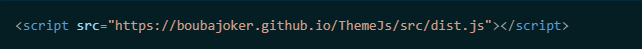
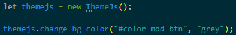

Open your '.html' file and write this code to link the librairy to your site:

Then, (for example) open your main script and type:

Commands:
change_bg_color()
Change your page background in the color that you want, just type in the first args the element that you want to select for activate the bg change and type in second args rgb or html color.
change_to_dark_mod()
Change your page backround to the html color value: "#000", just type in the first args the element that you want to select for activate the bg change.
change_to_light_mod()
Change your page backround to the html color value: "#fff", just type in the first args the element that you want to select for activate the bg change.
change_to_rgb()
Change your page background into an rgb value, just type in the first args the element that you want to select for activate the bg change and then, you can type 'numbers' value expl: